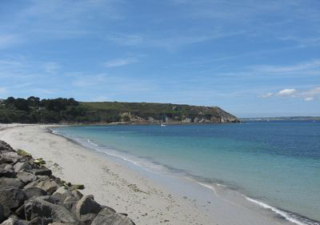
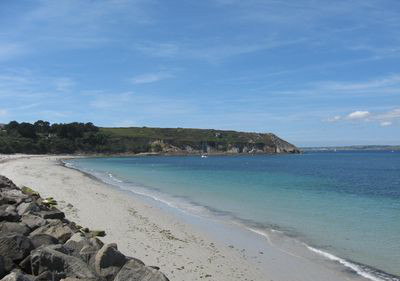

Compte rendu de sortie géologique à Camaret - Crozon
Compte rendu de sortie géologique à Camaret - Crozon

Accueil
Les élèves de terminale S du lycée Anne-Marie Javouhey à Brest, ont effectués en octobre 2013 une sortie géologique à Camaret pour mener une étude de terrain, afin de retrouver les grandes étapes de l'histoire du massif Armoricain.
La forme en coin de la Bretagne est déterminée par la répartition des roches qui la constituent, selon leur nature. En effet, le Massif Armoricain présente une grande diversité de roches.
- Des roches magmatiques : granites, gabbros, basaltes
- Des roches sédimentaires : schistes, grès, calcaires
- Et des roches métamorphiques : micaschistes et gneiss
Vue satellite de la presqu'île de Crozon
Carte schématique des plages de Camaret
Cette carte est un agrandissement de la zone encadrée en vert sur la vue précédente.
Les trois lieux encadrés en vert claire ont fait l'objet d'une visite.
Lieux visités
Plage du Correjou

Pli anticlinal de la Mort Anglaise
Plage du Veryac'h
Liens externes
Voici quelques liens vers des pages de sites web où l'on peut trouver des informations complémentaires :
- Vers espace-svt.ac-rennes.fr
- [PDF] Sur le site de SAGA (Société Amicale des Géologues Amateurs)
- [PDF] Un extrait de compte rendu d'excursion
Attribution des sources
Les images proviennent de sites web divers. Certaines d'entre elles ont été légèrement modifiées.
La carte (vue satellite) est tirée de Google Map. La carte schématique est tirée de Plages.tv
Une partie des photos utilisées sur le site sont tirées du fichier PDF de l'association SAGA.
Attribution de la réalisation
Le contenu textuel de ce site web a été créé par Mathieu CAROFF, Maxime LUCAS et Alexandre RIOU, trois élèves de terminale S-SVT. La structure du site en lui-même et le code HTML sont gérés par Mathieu CAROFF. Le site a été créé en 2013 et mis en ligne en 2018.
Par Mathieu CAROFF, Maxime LUCAS et Alexandre RIOU
Accueil
Les élèves de terminale S du lycée Anne-Marie Javouhey à Brest, ont effectués en octobre 2013 une sortie géologique à Camaret pour mener une étude de terrain, afin de retrouver les grandes étapes de l'histoire du massif Armoricain.
La forme en coin de la Bretagne est déterminée par la répartition des roches qui la constituent, selon leur nature. En effet, le Massif Armoricain présente une grande diversité de roches.
- Des roches magmatiques : granites, gabbros, basaltes
- Des roches sédimentaires : schistes, grès, calcaires
- Et des roches métamorphiques : micaschistes et gneiss
Vue satellite de la presqu'île de Crozon
Carte schématique des plages de Camaret
Cette carte est un agrandissement de la zone encadrée en vert sur la vue précédente.
Les trois lieux encadrés en vert claire ont fait l'objet d'une visite.
Lieux visités
Plage du Correjou |
Pli anticlinal de la Mort Anglaise |
Plage du Veryac'h |
Liens externes
Voici quelques liens vers des pages de sites web où l'on peut trouver des informations complémentaires :
- Vers espace-svt.ac-rennes.fr
- [PDF] Sur le site de SAGA (Société Amicale des Géologues Amateurs)
- [PDF] Un extrait de compte rendu d'excursion
Attribution des sources
Les images proviennent de sites web divers. Certaines d'entre elles ont été légèrement modifiées.
La carte (vue satellite) est tirée de Google Map. La carte schématique est tirée de Plages.tv
Une partie des photos utilisées sur le site sont tirées du fichier PDF de l'association SAGA.
Attribution de la réalisation
Le contenu textuel de ce site web a été créé par Mathieu CAROFF, Maxime LUCAS et Alexandre RIOU, trois élèves de terminale S-SVT. La structure du site en lui-même et le code HTML sont gérés par Mathieu CAROFF. Le site a été créé en 2013 et mis en ligne en 2018.
Par Mathieu CAROFF, Maxime LUCAS et Alexandre RIOU